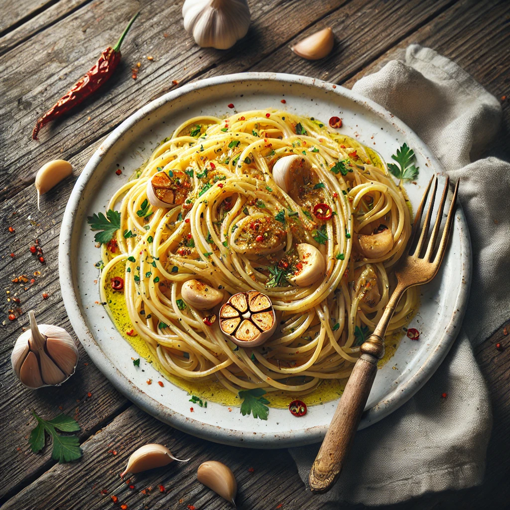

Home

Description
Spaghetti Aglio e Olio is a classic Italian pasta dish that’s simple yet packed with flavor. Made with just garlic, olive oil, chili flakes, and parsley, this quick and easy recipe is perfect for a delicious meal in under 20 minutes. Serve it with grated Parmesan for an extra touch of richness.
Ingredients
- 200g spaghetti
- 4 cloves garlic, thinly sliced
- 3 tablespoons olive oil
- ½ teaspoon chili flakes
- 1 tablespoon chopped parsley
- Salt to taste
- Grated Parmesan cheese (optional)
Steps
- Cook spaghetti in salted boiling water until al dente. Reserve ½ cup of pasta water and drain.
- Heat olive oil in a pan over low heat. Add garlic and sauté until golden.
- Add chili flakes and stir for a few seconds.
- Toss in cooked spaghetti and mix well. Add reserved pasta water if needed.
- Season with salt and stir in chopped parsley.
- Serve hot with grated Parmesan if desired.